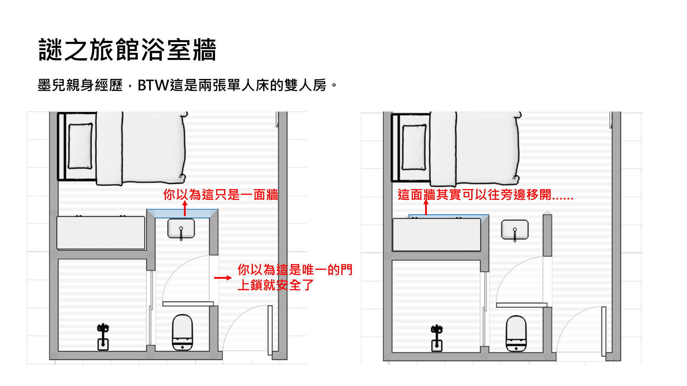
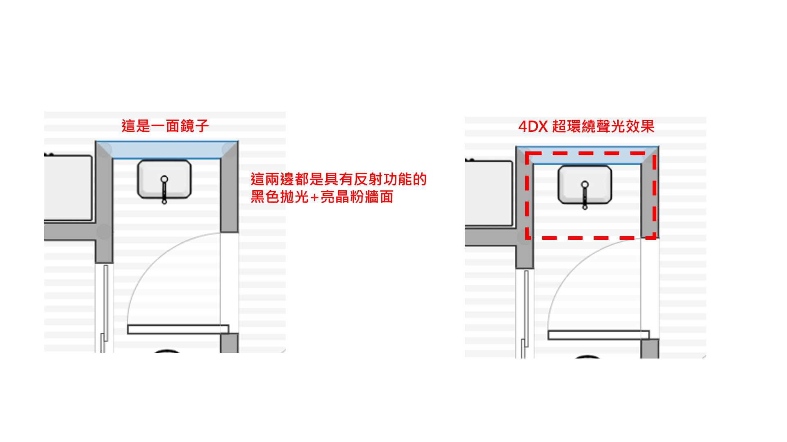

赤安短篇（赤井秀一 x 降谷零）
2020/2/14情人節賀文。
R18，未滿成年請勿閱覽。
秀零夫夫到新加坡旅遊的第一站......
/
「所以說，我們到底為什麼要來新加坡？」
粉刷色調清爽的林立高樓、船隻遍布的藍色港灣，這是他們著陸前從飛機窗戶向下眺望所看到的地景。高度開發、整齊且有秩序，這裡應當是個便利且舒適宜人的國家。然而下了飛機，穿過空盪的機場，搭上捷運，再走出車站來到室外時，迎接他們的是熱辣辣的南洋風情：直射且無雲的陽光，空地滿是植物園溫室才會看到的熱帶植物，應付午後暴雨設置的無加蓋超大水溝，走路一不小心就會摔進去。最要命的是與東京完全相反的溼度與溫度。
「嘛，柯南君去年來玩的時候去了些景點，說很值得看看。」
「三十三度！我今天凌晨從家裡出門的時候才十三度！新加坡人到了夏天怎麼辦......喔不對，他們沒有夏天，天天都是夏天！」
拖著行李走在正中午燠熱的人行道上，赤井沒有回話，只是抬起手臂抹了抹鼻樑上的汗珠。
「欸零君，你看對面。」
馬路對面的住宅大樓一樓公共空間剛好有小販中心 [*] ，那兒擺滿美食街一般的長桌，海南雞飯、燒臘、雲吞，幾間小吃的老闆在蒸騰熱氣中揮汗料理。
「到吃飯時間了，我們休息一下吧？」赤井試探性發問。先吃點在地風情的料理，降谷應該會愉快些，吧？
然而赤井所指的開放式餐桌區，位在室外，擁擠，沒有冷氣，只有大型電風扇勉強維持著空氣的流動。降谷停下腳步，無神的目光僅僅掠了過去，讓視線落在身後的赤井。「我說過了，先去旅館洗個澡再說。」
「......好吧。」
降谷比他預期的還要更暴躁點，維持著一個發熱最少、前進最快的完美速度。跟在後頭不敢再發言的赤井只得看著他的背影，稍微長了的金色髮尾貼在頸上，那兒整片肌膚都是熱汗淋漓，棉質衣領都像冒著蒸氣。降谷捏起衣服搧了搧，再煩躁地撓了撓側頸——
一個合理的推測在赤井的腦海裡成形。
/
降谷一刷卡進房就直衝遙控器所在。「呼啊！冷氣冷氣冷氣！」
火速設定好溫度後，行李扔了就往浴室衝。
「拿去。」赤井隨後踏進來，就被一條毛巾砸臉。「把汗擦一擦別感冒。」
不想要我感冒就別設定一個東京室外溫度的數字啊，赤井邊擦汗邊想著。
降谷長吁一口氣踏出淋浴間。踩在乾燥的地墊上，觸感舒服的纖維吸光多餘的水分，他覺得整個人都身心舒暢，被天氣榨乾的精力瞬間填滿。
腰際圍著毛巾，降谷迅速檢視了洗手臺旁飯店提供的保養用品。浴室的光線不太好，天花板上一盞小小的燈發著曖昧的光，讓小小的空間黯淡無比，連牆面都是黑色的拋光貼皮，剛才他還得把洗髮乳拿到快貼到臉上看，才不至於把它擠到頭上。
真是的，終於神清氣爽的氣色被這光一打又顯得暗沉蠟黃了。
就在降谷盯著鏡中的自己時，他聽見一個很近的、滑輪般的聲響，悄悄地、偷偷摸摸地響起。接著，眼前的景象像被揭開的窗簾一樣，午後的日光照了進來，自己的面孔被移開，取而代之的是背著光盯著自己的赤井秀一。 [*]
「你......」降谷瞪大眼，明明屬於浴室的牆面竟被輕鬆地拉開，浴室外的那個人就這樣直直看了進來，兩相對視，私密的浴廁空間突然和臥房連在一塊。「這個牆......」
「這面『牆』是我這邊的衣櫃門喔。」
「別鬧。」降谷才正要伸手奪回牆面，赤井的手就伸了進來，直接擒住他的後頸，溫熱掌心貼上沖過冷水澡的冰涼肌膚，精準地按摩著穴位與動脈。
就只是那麼一個舒服的瞬間讓他愣了下神，赤井就整張臉探了進來，毫不拖泥帶水直接扣著脖子吻了上來。
這突如其來的進攻讓降谷想避開，但在他口腔裡挑情探索的舌肉，以及在側頸耳根撫摸的手指，讓他不知不覺中慢慢放鬆了身體。
這件事其實很弔詭，被人突襲咽喉理當掙脫自保並迅速反擊，被人侵略口鼻應該要警戒藉機灌入的物體，然而眼前這個人熟悉的觸摸總能降低他的防備，不知不覺接納，然後耽溺其中。也許這是另類的被命中要害吧。
「喀啦。」正當降谷這麼想著時，清脆的金屬聲響從他側後方響起，猛地回頭只見浴室門鎖被從裡面打開了。這傢伙手臂還真長。
「做什麼，我就要出去了。」降谷把人推回臥房。
「你不用出來，我進去。」
「喂，等一——」降谷瞬間警鈴大作，轉身正要把門重新鎖上，誰知這個ＦＢＩ特工沒在跟他客氣，一個轉身的功夫就移動了位置，直接推門進來。「你幹嘛！」
赤井靠了過來，一手從降谷的側腹一路滑到背脊，最後捲住整個腰肢，另隻手則抓住降谷騰在半空的手，拉到自己胸口。
「你不要靠過來，我剛洗好澡！」雖說如此，但手掌觸摸到的裸露胸膛卻是冰涼乾燥。仔細一看，赤井全身只穿了條內褲，汗味很淡，皮膚也沒有多餘的黏膩感，估計是拿了那條毛巾沾水擦過全身了。
「等等再一起洗一次啊？」
唯一蔽體的毛巾被扯了下來，赤井推擠並用讓他轉了個身背對自己，然後像怕人跑了一樣把他夾得動彈不得。
降谷的腹部被迫貼上冰涼的洗手臺，雙手困難地抓著水龍頭以免整個人往前栽。而後頭一隻手伸到他胸前，沿著肌肉線條描摹愛撫，另隻手則越過他的肩膀，伸手去搆那被移走的牆面，再度把聯外窗口關上，讓浴室恢復成昏暗密閉的小空間。
「你別擠我。」降谷哼聲抗議，狹小的空間裡連這點聲響都有回音，降谷已經不敢想像等等會變成怎樣。
赤井把奪去的毛巾隨手折一折塞進降谷跟洗手臺間的縫隙，接著便搜索起一旁的瓶瓶罐罐。
「......在底下的櫃子。」
赤井騰手一撈，找到一小袋潤滑劑還有保險套。「謝了。」
降谷有點無奈，但還是盡可能微調自己的姿勢，好讓等會的碰撞不至於弄到全身瘀青。
他其實很清楚，一起旅遊住在異地旅館這件事總能開啟赤井的開關。這對那傢伙而言就意味著「好好享用假期」，更進一步的說法就是「好好享用降谷」。空蕩蕩沒有生活感的房間以及全白的雙人大床，總能觸發赤井的色心。降谷選擇第一站直奔旅館的時候也有預料到這個可能，只是沒想到竟然還會被浴室格局給陰了。那傢伙發現這神秘機關時該會是什麼表情，降谷已經不想去想像，趁他洗澡時偷偷拉開縫隙偷窺了多久也不知道。
「快點，等一下還要去吃飯。」降谷嘆口氣放棄掙扎，抬高臀部好讓準備工作更順利進行。
「我現在就餵飽你。」
降谷扶著有些不穩的鏡面，下身承受著赤井一如既往強悍的頂撞。還好良好的淋浴習慣讓這片瓷磚地板沒有被水沾濕，不然他倆肯定直接摔個半身不遂。
熱潮從交合處一路蔓延直至席捲全身，降谷覺得自己全身都燙得要命。但這又有別於戶外的濕熱，這種熱他很熟悉，而且總能讓他很舒服。熱空氣膨脹向上漂浮，這點降谷多少也能體會，因為性愛時發熱的身軀變得輕飄飄，應該也是相同原理。
淚花模糊的視線裡，赤井也通紅著臉，嘴唇在他的臉頰和脖子間不斷舔吻。肩膀上的吻痕和齒痕還微微發麻，赤井留下記號的位置拿捏得剛剛好，降谷都要懷疑他早就預謀犯案，暗中觀察他的衣領位置。
「嗯......赤井......」降谷的聲音暈陶陶地，他紐過頭去尋赤井的唇，豈料赤井竟縮頭去舔他的脊椎。
「看前面，零君。」
「不要......吻我、赤井......」人都是這樣吧，喜歡看愛人沉溺於自己的表情，卻羞於面對自己同樣被情慾沖昏頭的面孔。
「我吻你就好了。」降谷的臉被溫柔地掰回去。
這間浴室還有一個很糟糕的地方，洗手臺正前方的鏡子不說，當他往旁撇頭時發現左右兩邊的拋光牆面亮到能映出自己的臉，鑲在裡面的銀色亮粉讓本就被回音弄到有點昏的降谷更加暈眩。降谷只好選擇閉上眼，聽著嘴裡無法克制溢出的呻吟也悶在小小的方形空間裡無限迴盪。
赤井的動作越發猛烈，降谷皺著眉踮起腳尖，試圖調整身體深處頂弄的位置。他被迫再度攀上滑溜冰涼的鏡面，臉貼得很近，近到花朵般的霧氣隨著他急促吸吐而一綻一謝。胸前掛銀項鍊上的戒指前前後後晃動著，一下一下拍打在麥色胸膛。
緩衝的毛巾在劇烈活動中掉落，赤井乾脆把小臂檔在降谷的腹前，整個人緊緊纏繞著，昏黃光線下兩具膚色變得相近的軀體糾纏在一起。
「零君......零......」
腦裡本就承受身體每寸肌膚、每個感官轟隆隆的刺激，當加上赤井那沉醉性愛的低沉嗓音時，降谷覺得那聲呼喚都要喚進他心底深處。
「哈啊......！」降谷在最後一刻強行將自己撐到麻痺的手抽回，轉身去抓赤井的頭髮，使盡力氣扣下他的頭，送出自己柔軟的唇瓣。
/
模模糊糊地張眼，降谷在亮白的光線中看見赤井縮在小小的椅子上吃燒臘飯。
「醒了？你餓了嗎？我去剛才那個小販中心買了點吃的。」赤井放下筷子去拿另一份外帶。
「嗯？好......」
降谷伸了個懶腰坐起來，習慣性撓了撓側頸，卻沒有碰到一直掛在那兒的東西。「咦......我的......？」
「這幾天就別掛在脖子上了吧，天氣這麼熱，流汗不舒服。」赤井聳聳肩，亮出自己指節上的對戒。「和我一樣就好了。」
降谷在對方的示意下低頭看向自己的左手，屬於他的那枚戒指早就不知在何時被套了上去，在赤道白熾的光線下閃著光輝。
Fin.
情人節快樂：）
2020.2.14 墨兒∞
/
*註：
① 小販中心（Hawker center）是指沒有冷氣的熱食區，類似美食街。小販中心常和組屋（社會住宅）社區有所連結，提供組屋內居民生活必須，也是日常交流之地，常常可以看到華人、馬來人、印度人等不同族群的飲食店和諧比鄰營業。這種小販中心在新加坡很常見，柯南劇場版紺青之拳當中，京極真與地痞流氓對戰的美食中心就是這種小販中心。
② 飯店格局參考宜必思尚品酒店，移動的牆面為圖中藍色部分。
 －
Last edit 2020/2/22 | Built by 墨兒
Copyright © 2018 Your Company Name | Designed by Template Mo